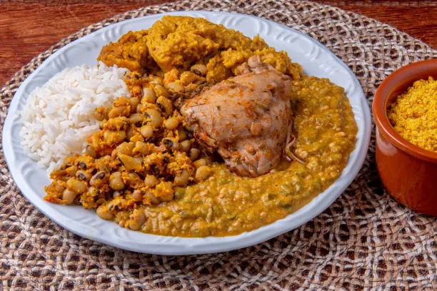

Traditional Bahian Platter

Description
A traditional Afro-Brazilian Bahian platter featuring stewed chicken, creamy vatapá, okra caruru, black-eyed peas, white rice, and golden toasted cassava flour on the side. Richly flavored with red palm oil (dendê), coconut milk, dried shrimp, peanuts, and cashews, every element brings a distinct texture to the plate.
To prepare the meal, the chicken is braised in an aromatic coconut and palm oil sauce while the okra and bread-based pastes simmer slowly until thick. Everything is plated hot together alongside fluffy rice, seasoned beans, and crispy farofa.
Ingredients
- Chicken thighs or drumsticks
- White rice
- Cooked black-eyed peas
- Fresh okra, finely chopped
- Day-old bread rolls (for vatapá)
- Cassava flour (for farofa)
- Coconut milk and red palm oil (dendê)
- Dried shrimp, ground peanuts, and cashews
- Onion, garlic, fresh ginger, cilantro, lime juice, and salt
Steps
- Season the chicken with garlic, lime juice, and salt, then braise it with onions, ginger, coconut milk, and palm oil until tender.
- Cook the white rice with garlic until fluffy and warm the cooked black-eyed peas with sautéed onions and a touch of palm oil.
- Simmer the chopped okra with onion, dried shrimp, ground nuts, and palm oil until thick to make the caruru.
- Blend the bread with coconut milk, dried shrimp, peanuts, and cashews, then cook over low heat with palm oil until creamy for the vatapá.
- Toast the cassava flour in a skillet with palm oil and a pinch of salt until golden and crunchy.
- Arrange the rice, black-eyed peas, vatapá, caruru, and chicken on a plate, serving the farofa in a small bowl on the side.
Home